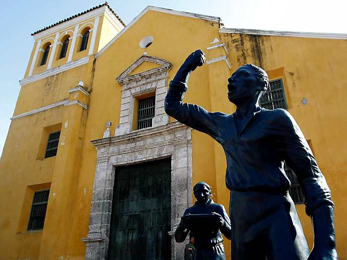
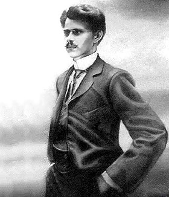
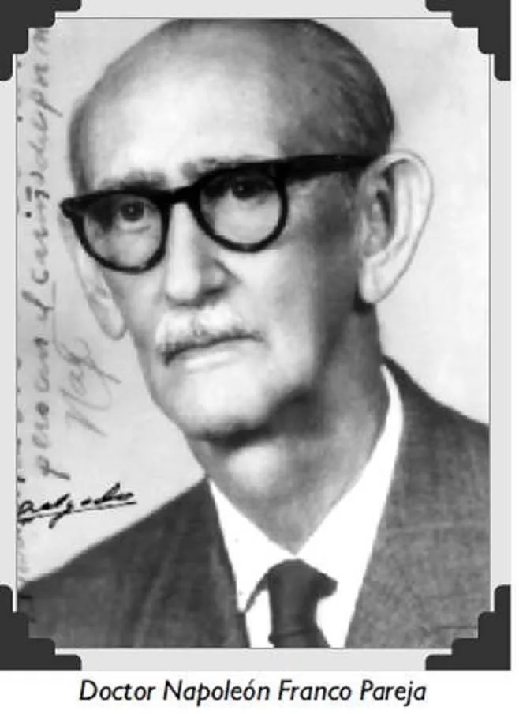

Cartagena de Indias ha dado a Colombia y al mundo héroes de la independencia, poetas, escritores, políticos, deportistas y artistas que nacieron entre sus calles y llevaron el nombre de la Ciudad Heroica por el mundo entero.

Pedro Romero Héroe de la Independencia · CartagenaPedro Romero fue un herrero afrodescendiente nacido en Cartagena que se convirtió en el principal líder popular de la Independencia. Organizó y movilizó a los artesanos, obreros y pueblo de Getsemaní en los famosos Lanceros de Getsemaní, el grupo que presionó decisivamente para que la élite criolla firmara la declaración de Independencia Absoluta el 11 de noviembre de 1811.
Su figura es la más representativa de la participación afrocartagenera en la gesta libertadora. Mientras los próceres criollos debatían, Pedro Romero y su pueblo llenaron las calles con lanzas y determinación. Sin él, la independencia de Cartagena habría tardado mucho más.
"El pueblo de Getsemaní tomó las armas y exigió la libertad que los señores no se atrevían a declarar."

Luis Carlos López El Tuerto López · PoetaLuis Carlos López, conocido como "El Tuerto López" por haber perdido un ojo en su infancia, es el poeta más grande nacido en Cartagena. Nació el 22 de mayo de 1879 en el barrio de Getsemaní y murió en la misma ciudad en 1950.
Sus poemas se caracterizan por la ironía feroz, el humor negro y la descripción descarnada de la vida provinciana cartagenera. Su obra más famosa, "A mi ciudad nativa", es un retrato irónico y apasionado de Cartagena, a la que compara con un viejo zapato cómodo. Fue considerado por escritores como Jorge Luis Borges como uno de los grandes poetas del idioma español.
"Urbe que hueles a brea, a salitre y a mareas..."

Napoleón Franco Estadístico y SociólogoNapoleón Franco Vargas es el estadístico, sociólogo y encuestador más reconocido de Colombia, nacido en Cartagena de Indias. Fundador de la firma Napoleon Franco & Asociados, es el referente número uno en medición de opinión pública, encuestas electorales y estudios sociales en el país.
Cartagenero de corazón, Franco ha sido columnista, analista político y una de las voces más respetadas en el análisis de la sociedad colombiana durante más de cuatro décadas. Su trabajo ha contribuido a entender y documentar los cambios sociales y políticos de Colombia desde la perspectiva caribeña.
Más Personajes Nacidos en Cartagena
Gabriel García Márquez
Escritor y Premio Nobel 📍 Aracataca, Magdalena · 1928Considerado el máximo exponente del realismo mágico, García Márquez hizo de Cartagena su refugio y escenario literario. En obras como Del amor y otros demonios, las murallas y casonas de "La Heroica" cobran vida, inmortalizando la esencia del Caribe colombiano que tanto inspiró su genio narrativo.
Antonio de la Torre y Miranda
Militar y Fundador 📍 Cartagena · S. XVIIIMilitar español nacido en Cartagena que fundó más de 40 pueblos en la costa caribe colombiana. Su labor colonizadora y humanitaria dejó huella en toda la región de Bolívar.
José Fernández Madrid
Prócer y Poeta 📍 Cartagena · 1789Médico, poeta y político cartagenero, uno de los firmantes del Acta de Independencia de Cartagena de 1811. Gobernador de Cartagena y figura clave de la Independencia colombiana.
Benkos Biohó
Líder Cimarrón · Libertador 📍 Palenque, Bolívar · c. 1570Esclavo africano traído a Cartagena que escapó y fundó San Basilio de Palenque, el primer pueblo libre de América. Héroe máximo de la resistencia afrocartagenera, fue capturado y ejecutado en Cartagena en 1621.
Rafael Núñez
Presidente de Colombia 📍 Cartagena · 1825Nacido en Cartagena el 28 de septiembre de 1825. Cuatro veces Presidente de Colombia y autor de la letra del Himno Nacional de Colombia. Lideró la Regeneración y la Constitución de 1886 que rigió el país por más de cien años.
María Mulata
Ave Símbolo de Cartagena 📍 CartagenaEl ave endémica del Caribe colombiano que habita los jardines y plazas del Centro Histórico de Cartagena. Símbolo natural de la ciudad, su canto alegre forma parte del paisaje sonoro de las mañanas cartageneras.